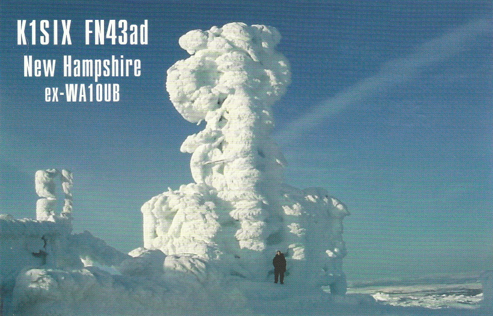

Flash ! DX


 

|
|
|
|

|
|
|
[Back Issues Jul.2010]
TIME:UTC(JST-09:00)
Report from JA1RJU(PM95sq)
31.Jul.2010(15:00c)
Report from JA1RJU(PM95sq)
30.Jul.2010(15:00c)
Report from JA1RJU(PM95sq)
29.Jul.2010(15:00c)
XV9DT 06:59 50.098 CW CQ
HL3EGX 08:22 50.100 SSB
Report from JA1RJU(PM95sq)
28.Jul.2010(15:00c)
Report from JA1RJU(PM95sq)
27.Jul.2010(15:00c)
BV2YA/b 04:30- 50.001 CW Beacon
JT1FDB/7 04:35 50.101 CW
JT1FDB/7 05:02 50.101 CW CQ
Report from JA1RJU(PM95sq)
26.Jul.2010(15:00c)
Report from JA1RJU(PM95sq)
25.Jul.2010(15:00c)
JI1LET/JD1 05:55 50.210 SSB
JT1FDB/7 07:20 50.101 CW
--------------------------------------------------
KL7RRC/P 2228Z 50125.6 499 on Big Buzz JL8GFB-#
KL7RRC/P 2239Z 50125.6 CW CQ 599 QSB JH7XRZ-#
KL7RRC/P 2246Z 50125.6 CQing JA7QVI
--------------------------------------------------
Report from JA1RJU(PM95sq)
24.Jul.2010(15:00c)
BV2YA/b 00:40- 50.001 CW Beacon
BV4VR 02:50 50.105 CW CQ
JT1FDB/7 02:57 50.101 CW CQ
Report from JA1RJU(PM95sq)
23.Jul.2010(15:00c)
JT1FDB/7 00:50 50.101 CW CQ
JT1FDB/7 01:43 50.101 CW CQ again
(JA6YBR/b 03:00- 50.017 CW Beacon Miyazaki)
JT1FDB/7 03:28 50.101 CW CQ again FB!
(OH0/DK1MAX 05:24- 50.098 CW JA8.7.6.5.3.2.9.0) 80W!
OH0/DK1MAX 06:32-43 50.098 CW open to JA1 UP1 (37 JA's QSO!)
JT1FDB/7 07:11 50.101 CW CQ again (no SSB QRV)
ES6RQ 07:17 50.088 CW @ FB sig!
--------------------------------------------------
OH2LE 0509Z 50081.0 tnx fer call ! JL8GFB-#
OH0/DK1MAX 0521Z 50098.0 TNX NEW 1 JA5QJD
OH0/DK1MAX 0528Z 50098.0 CQ JA building JL8GFB-#
OH0/DK1MAX 0538Z 50098.0 Tnx new JR4ABB
OH1XX 0553Z 50101.0 599 CQing JL8GFB-#
OH0/DK1MAX 0557Z 50098.0 Peak 559 FB JR2HCB
ES6EQ 0601Z 50088.0 CQing build JL8GFB-#
OH7HXH 0606Z 50083.5 CQ CQ 559 JL8GFB-#
ES6RQ 0610Z 50088.0 559>PM51 JE6AZU-#
SM1TDE 0610Z 50095.0 CQ JL8GFB-#
OH4MDY 0614Z 50090.8 weak CQ JL8GFB-#
UX0UN 0619Z 50090.0 599 CQ JL8GFB-#
OH1ND 0644Z 50105.0 strong JL8GFB-#
SM4DHF 0653Z 50103.0 PM85JH<>JO79SG FB JG2AJK
OH7PI 0658Z 50097.6 579 CQ JR2HCB
SM5FUG 0714Z 50081.0 tnx call JL8GFB-#
--------------------------------------------------
Report from JA1RJU(PM95sq)
22.Jul.2010(15:00c)
BV2YA/b 06:00- 50.001 CW Beacon
VR2SIX/b 06:00- 50.075 CW Beacon
--------------------------------------------------
SM7GVF 0605Z 50100.5 599 JL8GFB-#
OH0/DK1MAX 0607Z 50098.0 tnx 599/599 JL8GFB-#
JT1FDB/7 0611Z 50101.0 cq .. JE7ETY
SM7GVF 0628Z 50100.5 SIG up JR4ABB
SM7GVF 0631Z 50100.4 tnx! 559 Cfm JH8LLE-#
ES4EQ 0644Z 50081.0 579 JL8GFB-#
PA2M 0658Z 50083.0 CQING JA JA3EGE
JT1FDB/7 0658Z 50101.0 599 but lonely JL8GFB-#
ON4GB 0658Z 50073.0 CQ JA3EGE
PA2M 0700Z 50083.0 FBsigs QSB JA4FM
--------------------------------------------------
Report from JA1RJU(PM95sq)
21.Jul.2010(15:00c)
--------------------------------------------------
N7NW 0019Z 50097.0 hear weak CQing JL8GFB
VE7SL 0043Z 50110.3 CQing 599 Band still opening JL8GFB-#
VE7SL 0055Z 50095.0 CQ 559 QSB JH7XRZ-#
VE7SL 0108Z 50110.0 SSB 59 JH7XRZ-#
K6FV/B 0118Z 50068.9 Beacon in QM09 JH7XRZ-#
VE7FG 0122Z 50033.0 Beacon JH7XRZ-#
BA4T 0132Z 50097.0 CQ NA JM1TWR-#
KE7V 0155Z 50097.0 CQ 559 QSB JH7XRZ-#
VE7SL 0200Z 50110.0 Tnx CQn JQ2QHQ-#
--------------------------------------------------
XV9DT 08:54 50.098 CW CQ UP1
BV2YA/b 09:27- 50.001 CW Beacon
DU1EV/B 09:27- 50.008 CW Beacon
Report from JA1RJU(PM95sq)
20.Jul.2010(15:00c)
JT1FDB/7 00:45 50.101 CW @ name Frank (QSL via DD0CW)
JT1FDB/7 05:45 50.101 CW again!
JT1FDB/7 06:11 50.101 CW CQ again!
BA4T 06:16 50.101 CW QSO with JT1
JT1FDB/7 06:56 50.103 CW CQ again!
JT1FDB/7 08:05 50.101 CW CQ again!
|
◎ = 177 DX stations worked on 6m by HS0AC during CQWW VHF contest = 1979-80年のHS1WRの運用以来、長年6mバンドのQRVが制限されていたタイ国(HS)で、 先週末のCQWW VHF Contestに限定免許で6mが許可され運用したRASTのクラブ局・HS0ACと日本からも多くの局がQSOできた。 RASTのHS0ZDX・Tonyからの報告によると、HS0ACは7月18日に運用されベトナム(XV)、中国(BA/BD)、香港(VR2)、 日本(JA)などと合計177局とCWでQSOできたとのこと。 HS0ACはYAESUのFT-736-Rの10W出力に、自作の3EL・Yagiを使い、HS2JFW・Joeによって運用された。 QSLはHS0ZFZ。 ------------------------------------------------------------------- The Radio Amateur Society of Thailand's club station, HS0AC, operating in the 6-metre (50-MHz) band for the first time in almost two decades and running just 10 watts to a three element homebrew Yagi antenna, made a total of 177 DX contacts outside Thailand during the CQWW VHF contest on July 18, 2010. The operator was Joe, HS2JFW, who entered the contest in the single operator, single band category, and this marked special authorisation for HS0AC to operate on 6-metres by Thailand's National Telecommunications Commission (NTC) following a formal request from RAST. The countries worked were Vietnam, China, Japan and Hong Kong and many reports received from the DX stations were 599. Propagation was thought to be Sporadic-E. The transceiver used was a Yaesu FT-736-R while the antenna was a home-brew three-element Yagi array . RAST hopes that the NTC will sanction future requests to operate on the 6-metre band and that eventually full access will be granted to the band in Thailand. Tony, HS0ZDX RAST International Liaison Officer ------------------------------------------------------------------- |
Report from JA1RJU(PM95sq)
19.Jul.2010(15:00c)
ES6RQ 05:58 50.088 CW
OH3XA 06:04 50.101 CW
ES6RQ 06:40 50.088 CW good sig, big pile!
ES4EQ 07:17 50.083 CW
OH7HXH 07:19 50.0845 CW
OH2MA 07:35 50.091 CW
OH7PI 07:42 50.0716 CW good sig!
ES6RQ 07:47 50.088 CW 4X6el full elevation for EME.
BA4T 08:54 50.097 CW
--------------------------------------------------
ES6RQ 0545Z 50087.0 TNX CALL MY CQ 6M OPEN JH0RNN
OH3XR 0609Z 50092.0 CQ JA5AUC
OH3XR 0639Z 50092.0 559 qsb JH0BQX-#
ES4EQ 0648Z 50083.0 tnx AL cq cq JA5AUC
OZ1LO 0657Z 50085.5 CQ CQ JG1LKO-#
OZ4LP 0658Z 50086.7 JH0INP
OH7PI 0701Z 50072.5 cq.. JE7ETY
OH7HXH 0711Z 50084.4 JH0BQX-#
ES6RQ 0713Z 50088.0 signal up 599 now JH0BQX-#
OH7PI 0715Z 50071.7 good signal JF2TAR
SM2SUM 0727Z 50096.0 599 JL8GFB-#
ES4EQ 0728Z 50082.8 JH0BQX-#
OH7HXH 0730Z 50084.3 JH0INP
OH2MA 0731Z 50091.0 JH4CPC-#
EA1TRY 0732Z 50078.0 cq JI8ALC
OH2MA 0735Z 50091.2 JA5AUC
OH7PI 0738Z 50071.6 JH0INP
OH2MA 0731Z 50091.0 JH4CPC-#
OH1ND 0741Z 50102.2 TNX JA5AUC
SM2SUM 0744Z 50095.9 cq JA8ISU-#
OH1ND 0758Z 50102.2 CQ JE6AZU-#
SM2GCQ 0807Z 50087.6 CQ CQ JL8GFB-#
OH1XX 0812Z 50096.9 TNX HANNU JA5AUC
OH1XT 0819Z 50089.0 559 into PM51 JE6AZU-#
UX7LT 0826Z 50081.8 tnx JA7WSZ
OH1ND 0828Z 50102.0 cq JA8ISU-#
OH1XT 0831Z 50088.9 cq JA8ISU-#
--------------------------------------------------
Report from JA1RJU(PM95sq)
18.Jul.2010(15:00c)
XV9DT 01:15 50.098 CW CQ TEST OL21
HS0AC 01:40 50.100 CW TEST OK03
BG7NFM 02:13 50.100 CW calling HS0
VR2SIX/b 02:13 50.075 CW Beacon weak
XV9DT 02:20 50.098 CW CQ TEST
HS0AC 04:06 50.100 CW @ TEST 599 OK03
HS0AC 04:50 50.100 CW still good !
VR2XLN 05:05 50.104 CW CQ TEST
BA4TB 05:07 50.108 CW CQ
VR2XMT 05:08 50.115 SSB CQ
VR2SIX/b 05:10- 50.075 CW Beacon
XV9DT 05:15 50.098 CW CQ TEST
BG5CGH 06:05 50.100 CW TEST PL09
VR2XMT 06:30 50.090 RTTY CQ CQ 599
LA5UF 07:08 50.090 CW UP1
SM2SUM 07:16 50.0895 CW
OH6WD 07:38 50.090 CW
BA4SI 07:44 50.103 CW CQ
SM7GVF 07:52 50.0878 CW
ES6RQ 07:58 50.088 CW big pile!
--------------------------------------------------
LA5UF 0647Z 50090.0 599 JL8GFB-#
LA5UF 0654Z 50090.0 JH0INP
LA5UF 0656Z 50090.0 UP1 JF1RYU
OZ1LO 0706Z 50080.2 JH0INP
SM7FJE 0724Z 50074.0 JH0INP
SM7GVF 0725Z 50087.0 JA5AUC
OH6WD 0728Z 50090.0 cq JA8ISU-#
C4N 0746Z 50100.0 QM09 JA7GYP-#
ES6RQ 0758Z 50088.0 JA2FTL-#
UT1I 0836Z 50096.0 cq contst JH7MQU
UR7D 0851Z 50090.0 JH0INP
--------------------------------------------------
Report from JA1RJU(PM95sq)
17.Jul.2010(15:00c)
BV2YA/b 02:00- 50.001 CW Beacon
BV2DQ 02:47 50.120 CW @ CQ
BV2DQ 02:59 50.120 SSB CQ
BU2AW 03:00 50.115 CW
BA5DX 03:02 50.105 CW @
BV2NT 03:10 50.115 SSB CQ
VR2SIX/b 03:15- 50.075 CW Beacon
(JA6YBR/b 03:15- 50.017 CW Beacon Miyazaki)
BX2AAL 03:22 50.130 SSB
BU2AW 03:28 50.115 SSB OP.Kamiyama san
BA8BA 05:34 50.097 CW CQ
BA4SI 05:40 50.102 CW CQ
BY8AC 05:44 50.105 CW CQ
9M6YBG 05:57 50.100 CW
XV9DT 05:58 50.098 CW CQ
VR2XMT 07:11 50.115 SSB
LZ2SC 07:22 50.085 CW
A92IO 08:36 50.107 CW CQ
XV9DT 08:47 50.098 CW CQ UP
--------------------------------------------------
YU7AR 0556Z 50099.5 barely hrd piece of CQing JL8GFB-#
UT4UO 0620Z 50102.0 CQing weak JE6AZU-#
YT1QQ 0645Z 50084.0 CQing on top of JA7 JL8GFB-#
HA8IH 0703Z 50086.0 TNX QSO ANTAL JA5AUC
HA8FK 0715Z 50080.0 tnx qso JE7ETY
OE4VIE 0715Z 50083.0 559 JE6AZU-#
LZ2SC 0718Z 50085.0 CQ JL8GFB-#
YT1QQ 0725Z 50086.0 TNX JA5AUC
ER1LW 0737Z 50096.5 TNX LYSY JA5AUC
YO9HP 0740Z 50082.2 cq JE7ETY
9A8A 0759Z 50090.3 559 into PM51 JE6AZU-#
A92IO 0800Z 50107.0 CW JF2MBF
A92IO 0804Z 50107.0 tks JA7GYP-#
A92IO 0810Z 50107.0 UP JA6WJL-#
LZ1QI 0812Z 50105.0 PETKO JA5AUC
YO9HP 0813Z 50082.0 JA6WJL-#
PA2M 0830Z 50081.0 559 JE6AZU-#
--------------------------------------------------
Report from JA1RJU(PM95sq)
16.Jul.2010(15:00c)
|
◎ = Thai hams authorised to use 6-metres during CQWW VHF contest= Thai radio amateurs have been granted temporary permission to use the 6-metre (50-54MHz) amateur band for the first time in almost two decades by the Thai regulator, the National Telecommunications Commission (NTC). This will allow Thai amateur radio operators to operate during the CQ Worldwide VHF contest for 48 hours on July 17-18, 2010. The last time such permission had been granted was in 1992 during the Southeast Asia Net convention staged in Chiang Mai that year. The only other sanctioned six-metre operation in Thailand had been by the late founder of RAST, Gen Kamchai Chotikul, HS1WR (SK), in the late 1970s and early 1980s, according to Champ, E21EIC. RAST had applied for permission to operate on six-metres during the CQWW VHF Contest this year following a suggestion by RAST Committee member John/Narissara, HS1CHB, during a committee meeting in May, 2010 and a formal written request had been subsequently conveyed to the NTC secretariat. Permission was granted in mid-June and has been conveyed to members by email, on this website and the RAST Forum will be updated with this news. 73 Tony, HS0ZDX RAST International Liaison Officer |
Report from JA1RJU(PM95sq)
15.Jul.2010(15:00c)
BV2YA/b 00:40- 50.001 CW Beacon
(JA6YBR/b 00:40- 50.017 CW Beacon Miyazaki)
Report from JA1RJU(PM95sq)
14.Jul.2010(15:00c)
XV9DT 00:27 50.098 CW CQ UP1
VR2SIX/b 00:33- 50.075 CW Beacon
BD5RV/4 01:55 50.097 CW
BV2YA/b 04:50- 50.001 CW Beacon
DU1EV/B 04:50- 50.008 CW Beacon
(JA6YBR/b 04:50- 50.017 CW Beacon Miyazaki)
Report from JA1RJU(PM95sq)
13.Jul.2010(15:00c)
WA2YUN/KH9 08:25 50.205 JT65A JR6EXN
Report from JA1RJU(PM95sq)
12.Jul.2010(15:00c)
BV2YA/b 02:45- 50.001 CW Beacon
DU1EV/B 03:45- 50.008 CW Beacon
VR2SIX/b 03:45- 50.075 CW Beacon
Report from JA1RJU(PM95sq)
11.Jul.2010(15:00c)
HL1IBG 04:10 50.095 CW CQ
UR5MID 06:08 50.087 CW
UR5MID 06:33 50.087 CW stil CQing (Today, 21 JA's QSO)
XV9DT 07:40 50.098 CW CQ UP1
Report from JA1RJU(PM95sq)
10.Jul.2010(15:00c)
HL2IPL 02:15 50.184 SSB
BD9BA 02:32 50.110 CW CQ
UA4LY 07:35 50.072 CW 559
EA5FX 07:40 50.071 CW
OH1XT 07:46 50.089 CW
ES6RQ 07:57 50.085 CW
EA5FX 08:16 50.071 CW
EA6VQ 08:26 50.113 CW
Report from JA1RJU(PM95sq)
09.Jul.2010(15:00c)
VR2SIX/b 05:40- 50.075 CW Beacon
SV1DH 05:58 50.102 CW CQ
SV1DH 06:29 50.081 CW CQ
UX0FF 06:32 50.087 CW
HL3IUA 06:39 50.092 CW CQ EU
ER1LW 07:02 50.086 CW weak
4X4DK 07:49 50.101 CW CQ
DU1EV 07:54 50.101 CW calling 4X4
RN0JJ 09:16 50.180 SSB @ 59+ (QTH=PN49=Raichikhinsk,Amur region)
RN0JJ 09:35 50.180 SSB still 59++ now JA8
RN0JJ 10:00 50.180 SSB still 59++ now JA1
JT1CO 10:10 50.102 CW @ 599/599
RN0JJ 12:15 50.180 SSB CQ CQ
Report from JA1RJU(PM95sq)
08.Jul.2010(15:00c)
BV2YA/b 00:45- 50.001 CW Beacon
OH3XR 05:52 50.085 CW
OH1ND 07:08 50.095 CW
OZ3ZW 07:37 50.306 JT6M with JR6RXN
Report from JA1RJU(PM95sq)
07.Jul.2010(15:00c)
◎ No DX ! "6m band is very quiet"
Report from JA1RJU(PM95sq)
06.Jul.2010(15:00c)
BA7IO/5 01:40 50.110 CW @ AS-137
BV2YA/b 01:45- 50.001 CW Beacon
VR2SIX/b 01:45- 50.075 CW Beacon
HA8CE 06:23 50.086 CW
IK0FTA 06:24 50.083 CW
HA8FK 06:27 50.082 CW
UX0FF 09:29 50.097 CW @ CQ
LZ2WO 09:37 50.0955 CW CQ
XV9DT 10:19 50.098 CW CQ UP1
--------------------------------------------------
IK4WMA 0632Z 50080.0 JN1NDY
HA3UU 0708Z 50090.0 weak JG1LKO-#
OK1DO 0743Z 50085.0 559 Jiri JL8GFB-#
OZ8ABE 0747Z 50081.5 559 JL8GFB-#
LA8HGA 0749Z 50088.0 599/559 tnx JL8GFB-#
OH1XT 0755Z 50089.0 559 into PM51 JE6AZU-#
SP3DOI 0759Z 50092.5 579/579 JL8GFB-#
OH7PI 0759Z 50096.0 599/599 JL8GFB-#
SM7FJE 0804Z 50112.0 559 JE6AZU-#
DK3WG 0804Z 50108.0 579/559 JL8GFB-#
IZ3DBA 0846Z 50089.3 559 JL8GFB-#
DK1MAX 0909Z 50102.7 599 still opening EU JL8GFB-#
LZ1QI 0945Z 50080.7 CQ CQ CQ JL8GFB-#
--------------------------------------------------
Report from JA1RJU(PM95sq)
05.Jul.2010(15:00c)
HA8FK 06:05 50.0955 CW
HA8FK 06:11 50.0955 CW @
HA8CE 06:39 50.1023 CW
OE4VIE 06:47 50.080 CW
ES4EQ 06:56 50.0802 CW
HA3UU 07:02 50.092 CW
OE4VIE 07:10 50.080 CW
LZ2WO 07:16 50.091 CW
UT7QF 07:19 50.093 CW CQ
OH1XT 07:25 50.084 CW
ES4EQ 07:33 50.080 CW
OH3XA 07:43 50.100 CW
BA4T 08:08 50.096 CW CQ DX
T77C 08:20-40 50.090 CW
--------------------------------------------------
BV2YA 0002Z 50001.0 Beacon JR2HCB
K0HA 0009Z 50083.0 Hrd JR2HCB
K0HA 0030Z 50083.0 559 into PM51 JE6AZU-#
SV1DH 0527Z 50102.0 CQ 519 JL8GFB-#
LZ2SC 0654Z 50097.5 CQ 579 JO7HAM
UX0FF 0720Z 50080.6 CQ JO7HAM
OH7PI 0738Z 50105.9 CQ JO7HAM
I4EAT 0834Z 50086.9 CQ JO7HAM
---------------------------------------------------
Report from JA1RJU(PM95sq)
04.Jul.2010(15:00c)
* 40th 6m AND DOWN Contest *
SV1JG/P 05:25 50.099 CW @ Test
SV1BTK 05:30 50.102 CW
SV1JG/P 05:50 50.100 CW
SV8CS 05:55 50.1023 CW
SV8CS 06:36 50.096 CW CQ
SM7GVF 06:49 50.105 CW @ CQ
OH7PI 07:28 50.106 CW QSB
OH7PI 08:07 50.106 CW @ CQ
Report from JA1RJU(PM95sq)
03.Jul.2010(15:00c)
* 40th 6m AND DOWN Contest *
Report from JA1RJU(PM95sq)
02.Jul.2010(15:00c)
--------------------------------------------------
A92IO 0526Z 50107.0 CQ CQ weak hear JL8GFB-#
A71EM 0543Z 50103.0 JA2.4.6.9.0
A92IO 0733Z 50106.9 deep qsb nw,559 JA4DLP-#
-------------------------------------------------
Report from JA1RJU(PM95sq)
01.Jul.2010(15:00c)
--------------------------------------------------
ST2AR 0623Z 50101.0 JH0INP
ST2AR 0709Z 50101.0 559 but beacon no RX JH0RNN
UT3UA 0830Z 50095.9 CQ JA JL8GFB-#
UT3UA 0848Z 50084.6 TNX CALL and try Eu/ME t UR JH0RNN-7
DK1MAX 0922Z 50098.7 599 JL8GFB-#
--------------------------------------------------